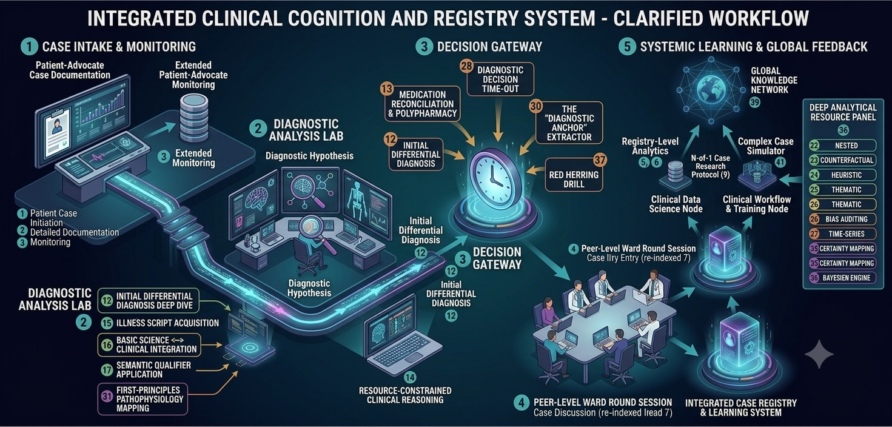

Lessons
What Is Clinical Cognition?
Why the reasoning behind a diagnosis usually stays invisible, and what it looks like made visible — plus a first taste of Socratic questioning as a tool for forcing that trace into the open.
M0, M1, M32, M31, M57The Socratic Loop
The full constraint set behind AI that questions rather than answers — and why forcing a genuine attempt before revealing an answer changes what a learner actually retains.
M1, M8, M54Building the Differential
Four stages from raw findings to a stress-tested, probability-weighted differential — plus a closing self-critique pass that turns the same discipline inward on the reasoning itself.
M12, M15, M17, M36, M14, M16, M18, M20, M33, M56Bias & Failure Modes
Five angles on the same failure surface — the moment of commitment, the load-bearing finding, signal vs. noise, distortion at handoff, and a full retrospective audit.
M26, M28, M30, M37, M24Patient Advocacy Track
Structured longitudinal state logging — translating a reasoning trace for the people relaying it onward, not just the clinician who produced it.
M2, M3, M11, M13Analytics at Scale
Single-record reasoning versus registry-level, population reasoning — and where the two disciplines genuinely diverge.
M5, M6, M22, M23, M27Safety & Systems Thinking
Failure Mode and Effects Analysis, borrowed straight from engineering, applied to a clinical process rather than a single decision.
M29, M38, M42, M49Evidence & Calibration
Multi-domain confidence reporting, shadow-reviewed before it's finalized — not one scalar score standing in for several independent judgments.
M21, M35, M45/46, Shadow ModulesFull Case, Start to Finish
The Master Protocol run end to end on one case — the complete reasoning trace, read back as a single artifact and checked for whether it holds together.
M50, Master ProtocolClinical Reasoning Beyond Diagnosis
Turning the same machinery inward — meta-cognition, multi-axis confidence, and self-critique for reasoning that continues past a single diagnosis.
M18, M20, M31, M56, M57Healthcare Systems & Operations
Extending single-agent reasoning to multi-agent, organization-level workflows — structured handoffs, distributed differentials, and systems-level root-cause analysis.
M39, M40, M41, M43Precision Medicine & Personalized Care
Personalization layers on top of the core loop — checking applicability, resolving conflicting evidence, weighing patient preference, and documenting the deviation.
M44, M45, M47, M48Clinical Wisdom & Mastery
Capturing tacit knowledge, telling real expertise apart from a shortcut that looks like it, and the closing habit of periodically auditing your own compressed intuition.
M51, M52, M53, M55Electives & Appendix Modules
Five optional, shorter modules kept out of the main sequence: N-of-1 research, journal reading, community medicine, thematic analysis, and longitudinal cross-case learning.
M9, M10, M19, M25, M7Relationship to the EBM Course
Evidence-Based Medicine, From First Principles
EBM asks "can I trust this evidence?" — this course asks "how did I get from findings to a judgment in the first place?" The two are complementary, not sequential: you can start with either. Several lessons here link out to the matching EBM lesson where the topics overlap.
